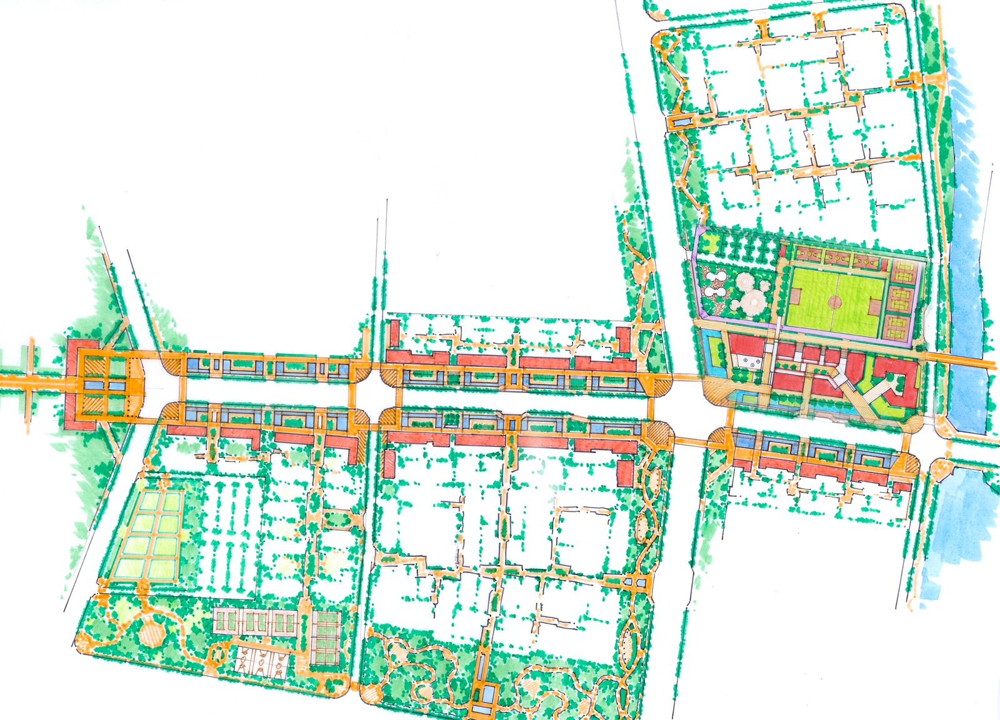

PROBLEM SOLVING
复杂项目的关键，不是把每个需求都满足，而是把取舍顺序做对。
真实项目很少是标准题。原始条件不理想、多需求冲突、预算限制、结构限制、使用预期不一致，往往同时存在。壹锘更重视的，不是回避复杂性，而是把复杂问题拆开、排序，并在真实边界里做出准确判断。

一、多需求冲突时，先判断什么最重要
很多项目之所以后面不断反复，不是因为需求多，而是因为需求之间没有先后顺序。壹锘会先判断：哪些目标必须优先保住，哪些可以调整，哪些地方必须统一，哪些可以局部让步。
二、原始条件不理想时，先建立空间秩序
户型问题、采光问题、梁位结构、开窗关系、层高限制、场地骨架，这些都不是靠后期“修饰”就能解决的。对这类项目，更重要的是先建立清楚的空间秩序，再谈气质与表达。
三、预算与完成度之间，需要清楚的判断
预算限制本身并不可怕，真正的问题在于预算与目标不清楚。壹锘会更看重把资源放在真正影响结果的地方，而不是平均分配。很多时候，集中保住关键关系，反而比面面俱到更有效。
四、复杂问题不能只靠风格遮盖
如果一个项目的空间逻辑本身没有成立，再强的视觉表达也很难真正解决问题。复杂项目越需要从空间关系、使用方式、结构条件和推进顺序上建立准确逻辑，而不是用表面语言去掩盖底层矛盾。
五、壹锘更重视把问题做对，而不是把话说满
复杂问题处理的核心，不是承诺所有目标都能同时实现，而是在真实边界里找到最合适的结果。我们更重视判断是否清楚、取舍是否准确、结果是否稳定，而不是给出脱离条件的理想答案。